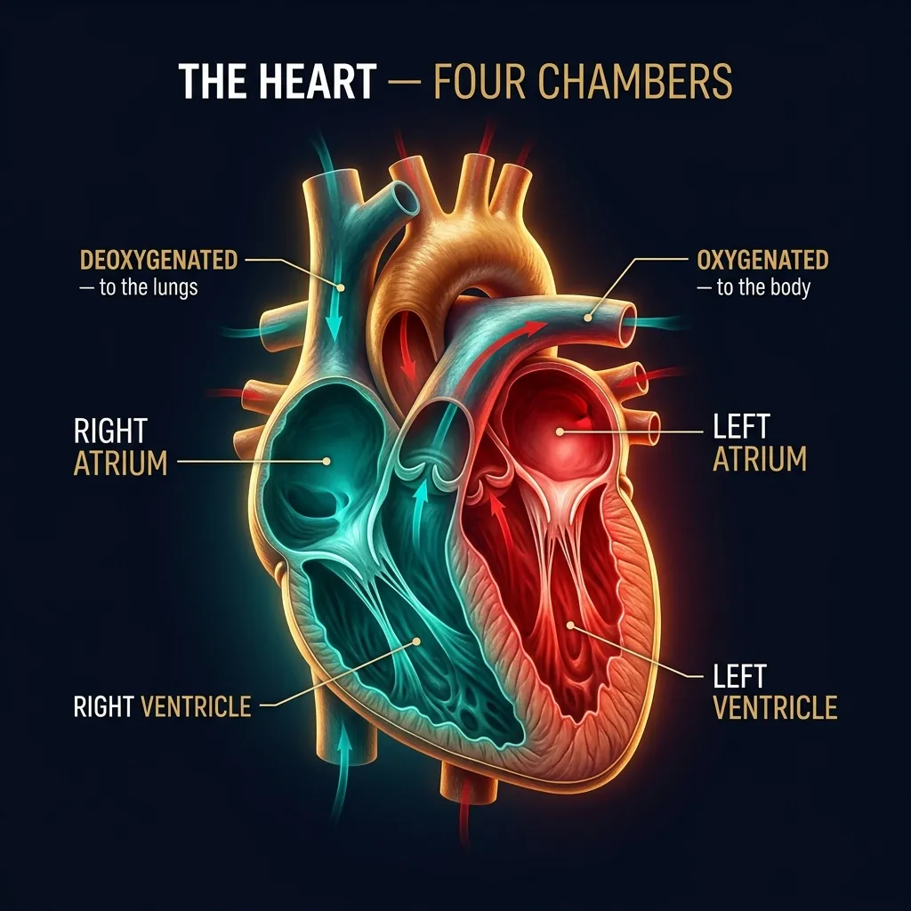

Figure 5.1 — The air pathway and the alveolus, site of all gas exchange; each alveolus is one cell thick.
8.2 What Happens Inside the Alveolus — Gas Exchange
The diffusion sequence (Graham's Law in action)
Within each air sac, the oxygen concentration is high, so oxygen passes or diffuses across the alveolar membrane into the pulmonary capillary.
At the beginning of the pulmonary capillary, the haemoglobin in the red blood cells has carbon dioxide bound to it and very little oxygen.
The oxygen binds to haemoglobin, and the carbon dioxide is released.
Carbon dioxide is also released from sodium bicarbonate dissolved in the blood of the pulmonary capillary.
The concentration of carbon dioxide is high in the pulmonary capillary, so CO₂ leaves the blood and passes across the alveolar membrane into the air sac.
This exchange of gases occurs rapidly (fractions of a second).
The carbon dioxide then leaves the alveolus (tiny air sacs of the lungs which allow for rapid gaseous exchange) when you exhale, and the oxygen-enriched blood returns to the heart.
The purpose, in one line
The purpose of breathing is to keep the oxygen concentration HIGH and the carbon dioxide concentration LOW in the alveoli, so this gas exchange can occur.
8.3 External vs Internal (Tissue) Respiration
External Respiration
External Respiration takes place through the lungs and refers to:
The absorption of Oxygen from the air into the blood.
The excretion of Carbon Dioxide from the blood to the air.
Internal / Tissue Respiration
Internal or Tissue Respiration refers to the transfer of Oxygen from the blood to the tissues of the body. At the same time as this occurs, the tissues give up Carbon Dioxide to the blood.
Quick testExternal = at the LUNGS (air ↔ blood). Internal = at the TISSUES (blood ↔ cell). Don't mix these up — examiners love this distinction.
8.4 Breathing
Definition
Normal breathing is a purely automatic process under the unconscious control of the nervous system. The normal rate of respiration in adults is 14 to 18 breaths per minute.
What regulates your breathing rate — counter-intuitive but vitalThe level of carbon dioxide in the blood effectively regulates the rate and depth of breathing.
It is NOT oxygen that triggers your urge to breathe — it is rising CO₂. This is the core mechanism behind Hyperventilation (over-breathing → CO₂ washes out → urge to breathe drops → tingling, dizziness) which is dealt with separately in Part 3.
Normal Adult Respiration Rate
14 – 18 / min
Control Centre
Medulla (Autonomic)
Primary Stimulus
Blood CO₂ Level
Conscious Override
Possible (limited)
§ 9The Circulatory System
Why it existsBlood supplies our organs with life-giving oxygen and carries away waste products. The circulatory system consists of the heart and the blood vessels, and maintains the flow of blood throughout the body. Without it, gas exchange at the lungs is pointless — there must be a delivery network.
9.1 The Heart
What the heart does — concise
The arteries carry blood from the heart at HIGH pressure, and the veins return blood to the heart at LOW pressure. The heart is a pumping system which:
Intakes de-oxygenated blood through the veins.
Delivers it to the lungs for oxygenation.
Then pumps it into the various arteries to be transmitted where it is needed throughout the body for energy.

CINEMATIC DIAGRAM — pending generation (Banana Pro)Fig 5.3 (The Heart).
Figure 5.3 — The four chambers of the heart: the right side handles deoxygenated blood to the lungs, the left side oxygenated blood to the body.
Memorise — cardiac output values
At rest the cardiac output (the quantity of blood the heart pumps in one minute) of an adult with:
Heart Rate = 72 beats per minute
Stroke Volume = 70 ml
… is about 5 litres per minute. (Stroke volume × Heart rate = Cardiac output.)
9.2 How the Heart Works — Systole & Diastole
Two phases of the cardiac cycle
When the heart muscle contracts or beats (called SYSTOLE), it pumps blood out of the heart. Then the heart muscle relaxes (called DIASTOLE) before the next heartbeat. This allows blood to fill up the heart again.
The two-stage contraction of systole
Stage 1: The right and left atria contract at the same time, pumping blood to the right and left ventricles.
Stage 2: The ventricles contract together to propel blood out of the heart.
The two-sided traffic plan
Right Side of the Heart
Collects oxygen-poor blood from the body and pumps it to the lungs, where it picks up oxygen and releases carbon dioxide.
Left Side of the Heart
Collects oxygen-rich blood from the lungs and pumps it to the body, so that the cells throughout your body have the oxygen they need to function properly.
Figure 5.5 — The circulation loop: the pulmonary circuit to the lungs and the systemic circuit to the body.
Blood's journey from left ventricle to capillaries
Blood containing oxygen is pumped around the body from the left ventricle. The oxygenated blood passes through the aorta into the arteries before arriving at the smallest vessels of the system, the capillaries. The Oxygen–Carbon Dioxide exchange takes place through the walls of the capillaries.
9.3 Pulse Rate
Definition
The normal rate of the pulse is the rate of the heartbeat. A healthy person at rest has a pulse rate of between 60 and 80 beats per minute. The rate is increased by:
Exercise
Emotional inputs
Disease
Stress & fear — autonomic adrenaline surge
When the body experiences stress or fear, adrenaline is released into the bloodstream causing an immediate increase in the pulse rate. (This is the ANS "fight-or-flight" response from §7.4.)
Resting Pulse (Healthy)
60 – 80 bpm
Cardiac Output Reference
72 bpm × 70 ml
Output Per Minute
≈ 5 L/min
Adrenaline Effect
Immediate ↑ pulse
9.4 Composition & Function of the Blood
Two main components of blood
Blood has two main components — PLASMA and FORMED ELEMENTS.
Plasma: Nearly everything that blood carries — including nutrients, hormones and waste — is dissolved in plasma, which is mostly water.
Formed elements: Cells and parts of cells that also float in plasma.
Formed elements — the three cell types
Cells and cell-fragments in the blood
Element
What it is / does
Notes
White Blood Cells (WBCs)
Part of the immune system
White corpuscles produce antibodies to fight bacteria.
Platelets
Help form clots
Smallest of the blood cells; assist in the blood-clotting process.
Red Blood Cells (RBCs)
Carry oxygen & carbon dioxide
Numerous — make up more than 90 % of the formed elements in the blood. Virtually everything about them helps them carry oxygen more efficiently.
Inside a Red Blood Cell — Haemoglobin (Hb)
Structure of haemoglobin — DGCA-favourite question
A red blood cell's lack of nucleus also gives it more room for haemoglobin (Hb), a complex molecule that carries oxygen. It is made of:
A protein component called GLOBIN.
FOUR pigments called HEMES.
The hemes use IRON to bond to oxygen.
Inside each RBC are ≈ 280 million haemoglobin molecules.
Figure 5.4 — Each red cell packs ~280 million haemoglobin molecules; each carries four iron-bearing hemes that grip oxygen.
If you lose a lot of blood…
Why blood loss is dangerous
If you lose a lot of blood, you lose a lot of your oxygen delivery system. The immune cells, nutrients and proteins that blood carries are important too, but doctors are generally most concerned with whether your cells are getting enough oxygen.
Emergency management
In an emergency situation, doctors will often give patients volume expanders, like saline, to make up for lost blood volume. This:
Helps restore normal blood pressure.
Lets the remaining red blood cells continue to carry oxygen.
Sometimes is enough to keep the body going until it can produce new blood cells and other blood elements.
If not, doctors give blood transfusions to replace some of the lost blood. Blood transfusions are also fairly common during some surgical procedures.
The principal functions of the blood — full DGCA list
The five principal functions of blood
#
Function
Mechanism
1
Carry oxygen to, and carbon dioxide from, the various tissues and organs of the body.
Haemoglobin in RBCs
2
Carry nutrients to tissues and remove waste products from these tissues.
Dissolved in plasma
3
Carry chemical messengers, such as hormones including ADRENALINE, to regulate the actions and secretions of various organs.
Plasma transport
4
Transport cells which can attack and destroy invading micro-organisms, enabling the body to resist disease.
WBCs / antibodies
5
Assist in temperature control of the body.
Vasodilation/constriction
9.5 Failures or Malfunctions of the Circulatory System
Two principal failure modes
The circulatory system can malfunction in two principal ways:
The main component of the system, the heart and the blood vessels, may develop a fault.
The blood may become unable to carry enough Oxygen for the need of the organs and tissues of the body.
Angina & Heart Attack
Definitions
A lack of oxygen supply to the heart may give rise to symptoms of Angina. A heart attack is when low blood flow causes the heart to starve for oxygen. Heart muscle dies or becomes permanently damaged. Your doctor calls this a myocardial infarction.
Causes of angina and heart attack
The blood-clot mechanism
Most heart attacks are caused by a blood clot that blocks one of the coronary arteries.
The coronary arteries bring blood and oxygen to the heart. If the blood flow is blocked, the heart starves for oxygen and heart cells die.
A clot most often forms in a coronary artery that has become narrow because of the build-up of a substance called PLAQUE along the artery walls.
Sometimes, the plaque cracks and triggers a blood clot to form.
Occasionally, sudden overwhelming stress can trigger a heart attack.
Risk factors for angina and heart attack — the full DGCA list
Risk factors — pilots should be screened for these at every medical
Risk Factor
Why it matters
Bad genes (hereditary factors)
Family history is non-modifiable but flagged in flight-medical examinations.
Being male
Higher statistical risk than females (until menopause for women).
Diabetes
Damages blood-vessel linings and accelerates plaque build-up.
Why pilots care — DGCA medical implicationsEvery one of these risk factors is screened at Class-I & Class-II DGCA medicals via ECG, lipid panel, fasting glucose, BMI, blood pressure measurement and history. Even an unsuspected silent angina is a fitness-defeating condition; routine cardiac screening exists precisely because the in-flight failure mode is sudden incapacitation.
Insufficiency of Oxygen — the second failure mode
Why this is its own category
The second principal way the circulatory system can malfunction is "Insufficiency of Oxygen" — the blood becoming unable to carry enough oxygen for the needs of the organs and tissues. This is the gateway concept that leads directly into the next major topic — HYPOXIA — covered in detail in §10 (Part 3). Hold the term in mind.
9.6 Self-Check & Memory Aids — Part 2
Numbers you must know cold
DGCA-style probe questions
Try these without looking back
State the three main divisions of the Nervous System. Which one controls the heart, lungs and gut without conscious effort?
Trace the path of air from the nose to the alveoli — name every structure.
What is the difference between External and Internal Respiration?
What is the normal adult respiration rate, and what is the primary regulator of breathing?
Define cardiac output. Compute it for HR 72 bpm, SV 70 ml.
What is the difference between Systole and Diastole? Describe the two-stage contraction.
State the two main components of blood and the three types of formed elements.
How many haemoglobin molecules are inside each RBC? How many hemes per Hb?
List the five principal functions of blood.
What are the two principal failure modes of the circulatory system? Name the medical term for a heart attack.
List at least eight risk factors for angina/heart attack relevant to a DGCA medical.
What is plaque, and why does it matter to coronary arteries?
Mnemonic — Air pathway"Never Pinch The Lazy Bronchitis Boy's Alveoli" → Nose · Pharynx · Trachea · Larynx · Bronchi · Bronchioles · Alveoli. (Note the epiglottis sits between nose/pharynx and trachea acting as the airway gatekeeper.)
Mnemonic — 3 NS divisions"Cops Patrol Automatically" → CNS (Central — Brain + Cord, the HQ) · PNS (Peripheral — all peripheral nerves, the patrol) · ANS (Autonomic — runs without orders).
Mnemonic — Right vs Left heart"Right is BLUE, Left is RED" → Right side handles de-oxygenated blood (to lungs); Left side handles oxygenated blood (to body).
§ 15Blood Pressure
15.1 What Determines Blood Pressure
The four determinants — DGCA-quoted
Blood pressure depends on:
The cardiac output,
The resistance of the capillaries (peripheral resistance),
The elasticity of the arterial walls, and
The blood volume and viscosity.
15.2 Definitions — pressure on the arteries
Three key facts
Blood pressure is the pressure exerted by blood on the walls of the main arteries.
The blood-pressure which is measured during flight medical checks is the pressure in the artery of the upper arm (representing the pressure at heart level).
The permanent pressure against the arterial wall is called DIASTOLIC pressure.
The increased pressure occurring with each beat of the heart is called the SYSTOLIC pressure.
SYSTOLIC PRESSURE
The increased pressure occurring with each beat of the heart.
This is the higher number in the BP reading — generated during ventricular contraction (systole, §9.2). It is the pressure peak as blood is ejected from the left ventricle into the aorta.
DIASTOLIC PRESSURE
The permanent pressure against the arterial wall.
This is the lower number — the resting pressure between heartbeats, when the heart muscle relaxes (diastole) and refills with blood. It represents the baseline strain on the arteries.
15.3 120/80 — the Normal Benchmark
The number every pilot must know120/80 is a normal blood pressure for a healthy young adult.
The notation reads "120 over 80" — meaning systolic 120 mmHg, diastolic 80 mmHg. This is the figure that DGCA aero-medical examiners measure against at every Class-1 and Class-2 medical.
Figure 5.6 — Measuring blood pressure: the cuff inflates around the upper arm, then deflates while the examiner listens for arterial sounds.
15.4 High Blood Pressure (Hypertension) — Causes & Pilot Implications
DGCA-quoted — the unfitness clauseHigh blood pressure or hypertension is a MAJOR CAUSE of unfitness in pilots.
This single sentence is the most important takeaway from §15. The DGCA aero-medical examiner will defer or restrict a pilot's medical certificate the moment hypertension is detected and not adequately controlled.
Causes of Blood Pressure (Hypertension) — full DGCA list
Seven causes of hypertension a pilot must remember
#
Cause
Pilot-Specific Note
1
Stress
Sustained ANS / adrenaline activation. Pilots are exposed to chronic occupational stress — duty rosters, weather, currency requirements.
2
Smoking
Direct link to §13. Nicotine constricts vessels; CO damages endothelium.
Figure 5.7 — What determines blood pressure: cardiac output and peripheral resistance.
What a pilot can do — the modifiables
Of the seven causes, five are modifiable (stress management, no smoking, low-salt/low-fat diet, weight control, regular exercise). Only age and (to a large extent) narrowing of arteries from existing plaque are non-modifiable. The pilot who fails his Class-1 medical because of hypertension has lost his career to a condition that was, in most cases, preventable.
§9.5: hypertension is one of the 12 risk factors for angina / heart attack.
§13.3: smoking causes circulatory problems and accelerates plaque.
§14.5: alcohol contributes to liver/heart/brain damage.
The DGCA HPL paper frequently combines these topics in one MCQ stem — e.g. "A 48-year-old smoker with BP 145/95 …" — testing whether you can connect the dots.